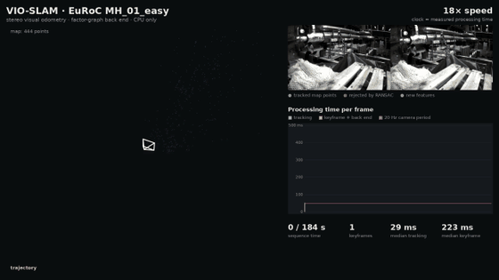

Open source · C++ Active
VIO-SLAM: multi-camera visual-inertial SLAM
Feature-based SLAM for stereo and multi-camera rigs, with IMU fusion, Bag-of-Words loop closure and global relocalization on a GTSAM/iSAM2 back end. I benchmark every change on EuRoC with a deterministic harness that records per-stage timing and ATE/RPE.
- 2 → 11 of 11EuRoC sequences completed after fixing back-end, data-association and memory bugs
- 243 → 71 msper frame; peak memory 20 → 4.7 GB
- 14.2 → 3.2 cmtrajectory error on fast-motion V1_02 after adding stereo-inertial fusion
- AP 0.38 → 0.63loop-closure precision using self-supervised I-JEPA features instead of Bag-of-Words
Built on MC-SLAM from Northeastern's Field Robotics Lab (original author Pushyami Kaveti). I wrote the tracking front end, global relocalization and pose-only back end, and have since ported, benchmarked and debugged the system.